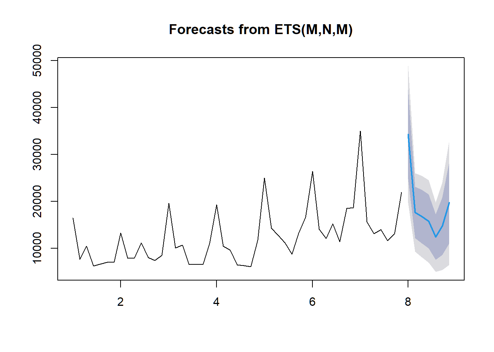

Chapter 8 시계열 분석1
기후나 주가지수와 같이 시간에 따라 관찰된 값들을 분석하는 경우 시계열분석 기법을 사용합니다. 과거의 값들을 토대로 미래의 값을 추정하거나 패턴들의 특징을 파악하기 위해 분석하는 기법입니다. 이전에 일간별로 수집한 데이터들을 전처리하여 연습생별 언급량을 계산하는 과정을 진행하였었는데 오늘은 이 데이터를 활용, 각 연습생별 적절한 모델을 찾고 해당 모델을 토대로 예측값을 도출하여 이를 비교하는 과정을 진행하겠습니다.
8.1 ts객체
time-series의 약자인 ts객체는 이름에 나와있는 것처럼 시계열분석을 위해 사용되는 객체 중 하나입니다. 시간의 흐름에 따라 연속적인 속성을 지닌 변수에 ts()함수를 적용하여 생성할 수 있으며, 시계열에 존재하는 주기를 frequency 옵션을 사용하여 지정할 수 있는것이 특징입니다. 이전장에서 사용한 total변수를 사용하여 연습생들의 언급량의 총 합을 계산하여 이를 ts객체로 생성해 보겠습니다.
library(dplyr)
ts_mention <- total %>%
group_by(p_ymd) %>%
summarise(sum_mention = sum_mention %>% sum()) %>%
ts(frequency = 7)
ts_mention## Time Series:
## Start = c(1, 1)
## End = c(7, 7)
## Frequency = 7
## p_ymd sum_mention
## 1.000000 18048 16441
## 1.142857 18049 7624
## 1.285714 18050 10450
## 1.428571 18051 6213
## 1.571429 18052 6596
## 1.714286 18053 7046
## 1.857143 18054 7027
## 2.000000 18055 13243
## 2.142857 18056 7902
## 2.285714 18057 7904
## 2.428571 18058 11147
## 2.571429 18059 8051
## 2.714286 18060 7396
## 2.857143 18061 8489
## 3.000000 18062 19602
## 3.142857 18063 10050
## 3.285714 18064 10682
## 3.428571 18065 6534
## 3.571429 18066 6582
## 3.714286 18067 6531
## 3.857143 18068 11108
## 4.000000 18069 19281
## 4.142857 18070 10440
## 4.285714 18071 9554
## 4.428571 18072 6465
## 4.571429 18073 6286
## 4.714286 18074 6051
## 4.857143 18075 11791
## 5.000000 18076 24992
## 5.142857 18077 14246
## 5.285714 18078 12820
## 5.428571 18079 11127
## 5.571429 18080 8714
## 5.714286 18081 13161
## 5.857143 18082 16611
## 6.000000 18083 26408
## 6.142857 18084 14017
## 6.285714 18085 12060
## 6.428571 18086 15208
## 6.571429 18087 11365
## 6.714286 18088 18463
## 6.857143 18089 18618
## 7.000000 18090 34965
## 7.142857 18091 15609
## 7.285714 18092 13102
## 7.428571 18093 14000
## 7.571429 18094 11601
## 7.714286 18095 13098
## 7.857143 18096 219058.2 모델링
8.2.1 시계열 회귀 모델
forecast패키지에 포함되어 있는 tslm() 함수는 시계열 회귀분석을 하는데 용이한 함수입니다. 일반적으로 lm()함수와 동일한 기능을 수행하지만 시계열 데이터가 보유하고 있는 계절성과 추세를 자동으로 계산하여 각각 season, trend 변수로 치환하고, 이를 회귀분석에 사용할 수 있도록 해줍니다.
library(forecast)
# tslm 모델 생성
mod_tslm <- tslm(sum_mention ~ trend + season, data = ts_mention)
# 모델 결과
mod_tslm %>% summary()##
## Call:
## tslm(formula = sum_mention ~ trend + season, data = ts_mention)
##
## Residuals:
## Min 1Q Median 3Q Max
## -5591.7 -1803.1 -389.8 1262.4 7884.2
##
## Coefficients:
## Estimate Std. Error t value Pr(>|t|)
## (Intercept) 16949.91 1184.11 14.314 < 2e-16 ***
## trend 235.60 27.49 8.572 1.10e-10 ***
## season2 -10956.17 1440.04 -7.608 2.31e-09 ***
## season3 -11665.49 1440.83 -8.096 4.89e-10 ***
## season4 -12740.80 1442.14 -8.835 4.89e-11 ***
## season5 -14619.12 1443.97 -10.124 1.02e-12 ***
## season6 -13061.72 1446.32 -9.031 2.68e-11 ***
## season7 -9896.89 1449.19 -6.829 2.87e-08 ***
## ---
## Signif. codes: 0 '***' 0.001 '**' 0.01 '*' 0.05 '.' 0.1 ' ' 1
##
## Residual standard error: 2694 on 41 degrees of freedom
## Multiple R-squared: 0.8255, Adjusted R-squared: 0.7957
## F-statistic: 27.71 on 7 and 41 DF, p-value: 1.275e-13 생성된 모델의 결과를 살펴보면 자동으로 추세변수와 계절성 변수를 계산하여 이를통해 회귀식을 생성한 것을 볼 수 있습니다. 이렇게 생성된 모델을 forecast()함수를 통해 미래의 예측값을 도출해 낼 수 있습니다.
# 예측값 도출
mod_tslm_pred <- mod_tslm %>% forecast(h = 7)
mod_tslm_pred## Point Forecast Lo 80 Hi 80 Lo 95 Hi 95
## 8.000000 28729.98 24847.59 32612.37 22710.491 34749.47
## 8.142857 18009.41 14127.02 21891.80 11989.920 24028.90
## 8.285714 17535.69 13653.30 21418.08 11516.205 23555.18
## 8.428571 16695.98 12813.59 20578.37 10676.491 22715.47
## 8.571429 15053.27 11170.88 18935.65 9033.777 21072.75
## 8.714286 16846.27 12963.88 20728.65 10826.777 22865.75
## 8.857143 20246.69 16364.30 24129.08 14227.205 26266.18모델을 통한 예측값의 점추정 값과 신뢰구간을 계산해 줌을 볼 수 있습니다. 이렇게 계산된 예측값을 시각화하여 볼 수 있습니다.
# 예측값 시각화
mod_tslm_pred %>% plot() 최종적으로 모델을 사용하기 이전에 모델의 성능을 측정하여 해당 모델이 다른 모델에 비해 성능적으로 우위가 있는지를 판단할 수 있습니다. 모델의 성능을 측정하는 방법에는 다양한 방법들이 존재합니다. 함수 accuracy()를 사용하면 주요 성능을 계산하여 보여줌으로서 모델의 성능을 파악하는데 용이합니다.
# 모델 정확성
mod_tslm_pred %>% accuracy()## ME RMSE MAE MPE MAPE MASE ACF1
## Training set -1.949778e-13 2463.901 1914.331 -2.689877 17.70896 0.7446207 0.31141628.2.2 ETS
지수평활법(Exponential Smoothing)은 과거 시점의 값들을 지수적으로 감쇠시키는 가중치를 부여, 그 과정에서 시계열 데이터가 지니고 있는 추세적 특징과 계절성을 함께 사용하여 미래값을 추정하는 방식입니다. ets()함수를 통해 사용할 수 있습니다.
# ETS 모델 생성
mod_ets <- ets(ts_mention[, 'sum_mention'])
mod_ets## ETS(M,N,M)
##
## Call:
## ets(y = ts_mention[, "sum_mention"])
##
## Smoothing parameters:
## alpha = 0.4791
## gamma = 3e-04
##
## Initial states:
## l = 10157.3035
## s = 1.0528 0.785 0.66 0.8397 0.895 0.9398
## 1.8278
##
## sigma: 0.2171
##
## AIC AICc BIC
## 963.9526 969.7421 982.8708# ETS 모델 예측값
mod_ets_pred <- mod_ets %>% forecast(h = 7)
# ETS 모델 예측값 시각화
mod_ets_pred %>% plot()
# ETS 모델 성능
mod_ets_pred %>% accuracy()## ME RMSE MAE MPE MAPE MASE ACF1
## Training set 366.2466 2238.365 1732.237 -0.02427324 14.99357 0.673791 0.10157568.2.3 ARIMA
시계열 데이터의 자기회귀성을 통해 미래값을 추정하는 arima 모델을 사용하여 미래값을 추정할 수 있습니다. arima 모델은 평균과 분산이 일정한 정상성의 성격을 가진 시계열 데이터를 자기회귀모델(Auto-Regressive model)과 이동평균모델(Moving Average model)을 결합한 모델로서 각각 특정 과거시점까지의 계수의 자기상관성과 오차의 자기상관성을 하나의 모델로서 구현한 것입니다. 본래 arima 모델을 구하기 위해서는 먼저 차분을 통한 시계열의 정상성 확보 이후 ACF와 PACF를 통한 적절한 AR 차수와 MA 차수를 구하는 과정이 필요하지만 R에서 제공하는 auto.arima()함수는 (AICc값의 최소로 하는 모델을 찾아) 최적의 arima 모델을 찾아 반환하여 줍니다.
# arima 모델 생성
mod_arima <- auto.arima(ts_mention[, 'sum_mention'], stepwise = FALSE)
mod_arima## Series: ts_mention[, "sum_mention"]
## ARIMA(0,0,2)(1,1,0)[7] with drift
##
## Coefficients:
## ma1 ma2 sar1 drift
## 0.3016 0.4263 -0.4444 224.0282
## s.e. 0.1509 0.1442 0.1681 68.6841
##
## sigma^2 estimated as 6908166: log likelihood=-389.24
## AIC=788.49 AICc=790.15 BIC=797.18# arima 모델 예측값
mod_arima_pred <- mod_arima %>% forecast(h = 7)
# arima 모델 예측값 시각화
mod_arima_pred %>% plot()# arima 모델 성능
mod_arima_pred %>% accuracy()## ME RMSE MAE MPE MAPE MASE ACF1
## Training set -28.30705 2314.596 1719.968 -4.203 14.63408 0.669019 -0.01570348.3 모델 평가
accuracy()함수를 통해 계산한 모델들의 성능을 대조해 봄으로서 각 모델들의 성능을 한눈에 파악하고, 최적의 퍼포먼스를 보여주는 모델을 파악하여 최종 사용 모델로 선정할 수 있습니다. 생성한 모델들의 성능을 하나의 데이터 프레임으로 묶어 지표 기준으로 재정렬하는 과정을 진행합니다.
# 모델별 정확도 변수 생성
mod_tslm_accuracy <- mod_tslm %>% accuracy()
mod_ets_accuracy <- mod_ets %>% accuracy()
mod_arima_accuracy <- mod_arima %>% accuracy()
# 모델 정확도 이름 지정
dimnames(mod_tslm_accuracy)[[1]] <- 'mod_tslm'
dimnames(mod_ets_accuracy)[[1]] <- 'mod_ets'
dimnames(mod_arima_accuracy)[[1]] <- 'mod_arima'
# RMSE 기준 정렬
rbind(mod_tslm_accuracy, mod_ets_accuracy, mod_arima_accuracy) %>%
as.data.frame() %>%
arrange(RMSE)## ME RMSE MAE MPE MAPE MASE ACF1
## mod_ets 3.662466e+02 2238.365 1732.237 -0.02427324 14.99357 0.6737910 0.1015756
## mod_arima -2.830705e+01 2314.596 1719.968 -4.20300032 14.63408 0.6690190 -0.0157034
## mod_tslm -1.949778e-13 2463.901 1914.331 -2.68987699 17.70896 0.7446207 0.3114162# MAPE 기준 정렬
rbind(mod_tslm_accuracy, mod_ets_accuracy, mod_arima_accuracy) %>%
as.data.frame() %>%
arrange(MAPE)## ME RMSE MAE MPE MAPE MASE ACF1
## mod_arima -2.830705e+01 2314.596 1719.968 -4.20300032 14.63408 0.6690190 -0.0157034
## mod_ets 3.662466e+02 2238.365 1732.237 -0.02427324 14.99357 0.6737910 0.1015756
## mod_tslm -1.949778e-13 2463.901 1914.331 -2.68987699 17.70896 0.7446207 0.3114162# ACF1(1시차 자기상관성) 기준 정렬
rbind(mod_tslm_accuracy, mod_ets_accuracy, mod_arima_accuracy) %>%
as.data.frame() %>%
arrange(ACF1)## ME RMSE MAE MPE MAPE MASE ACF1
## mod_arima -2.830705e+01 2314.596 1719.968 -4.20300032 14.63408 0.6690190 -0.0157034
## mod_ets 3.662466e+02 2238.365 1732.237 -0.02427324 14.99357 0.6737910 0.1015756
## mod_tslm -1.949778e-13 2463.901 1914.331 -2.68987699 17.70896 0.7446207 0.3114162거의 모든 지표에서 arima 모델이 우위에 있는것으로 나오나 RMSE에서만은 ets 모델이 근소하게 우위에 있는것을 확인할 수 있습니다.
8.4 시계열 교차 검증

단일 데이터에 대한 모델링은 모델이 데이터의 특성을 지나치게 학습하여 일반화된 예측에서 성능이 되려 떨어지게 되는 과적합의 위험성이 있습니다. 모델의 과적합을 방지하기 위해 데이터의 부분추출을 통한 학습을 여러번 수행하고, 각 학습마다의 성능을 측정하여 그 성능값을 평균내는 방식의 교차검증을 통해 과적합의 위험성을 방지할 수 있습니다.
시계열 데이터에서의 교차검정은 tsCV()함수를 통해 수행할 수 있습니다. tsCV()함수는 특정 과거시점 까지의 데이터를 학습하고 누적 순차적으로 최신 데이터까지의 학습을 수행하는데 output으로 모델의 잔차를 반환하여 줍니다. 해당 잔차를 통해 각 모델별 성능을 계산하여 비교를 진행, 최적의 모델을 선택하여 사용할 수 있습니다.
8.4.1 교차검증 함수 생성
tsCV()의 인수로 시계열 모델링을 수행할 함수를 지정하는 과정이 필요합니다. 시계열 교차검증에 적합한 모델 함수를 생성하도록 하겠습니다.
# 시계열 교차검증용 모델 생성
forecast_arima <- function(x, h){
auto.arima(x, stepwise = FALSE) %>% forecast(h = h)
}
forecast_tslm <- function(x, h){
tslm(x ~ trend + season, data = x) %>% forecast(h = h)
}
forecast_ets <- function(x, h){
ets(x) %>% forecast(h = h)
}
# 교차검증 잔차
tslm_cv_residual <- tsCV(ts_mention[, 'sum_mention'], forecast_tslm, h = 1)
ets_cv_residual <- tsCV(ts_mention[, 'sum_mention'], forecast_ets, h = 1)
arima_cv_residual <- tsCV(ts_mention[, 'sum_mention'], forecast_arima, h = 1)
# 모델 평가 매트릭 함수 생성(RMSE)
RMSE <- function(res){
mean(res^2, na.rm = TRUE)^0.5
}
data.frame(
tslm = tslm_cv_residual %>% RMSE(),
ets = ets_cv_residual %>% RMSE(),
arima = arima_cv_residual %>% RMSE()
)## tslm ets arima
## 1 3453.27 3621.207 3845.548모델별 교차검증 결과로 나온 잔차에 RMSE를 기준으로 계산한 결과 시계열 회귀 모델(tslm)의 성능이 상대적으로 우수한 것으로 판별이 되었습니다.
8.4.2 최종 모델링
교차검증 모델 평가를 통해 시계열 회귀 모델을 사용하는 것이 괜찮다고 나왔으므로 이전에 생성한 시계열 회귀 모델을 최종 모델로 선정하겠습니다.
mod_tslm <- tslm(sum_mention ~ trend + season, data = ts_mention)8.4.3 잔차 검정
마지막으로 시계열 모델의 잔차가 백색잡음을 띄는지를 검정하도록 하겠습니다. 만약 잔차에 패턴 혹은 상관성이 존재할 경우 모델이 이는 회귀모델의 독립성 가정에 위배되므로 잘못된 모델이라고 할 수 있습니다.
mod_tslm %>% checkresiduals()##
## Breusch-Godfrey test for serial correlation of order up to 11
##
## data: Residuals from Linear regression model
## LM test = 12.45, df = 11, p-value = 0.3308 생성된 그래프의 잔차분포는 조금은 치우쳐 있지만 정규분포의 형태와 흡사해 보이고 acf역시 크게 이상은 없어보입니다. checkresiduals()함수는 모델이 회귀분석 모델이면 Breusch-Godfrey test를, 그렇지 않으면 Ljung-Box test를 진행합니다. 두 검정법 모두 귀무가설로 잔차의 상관성이 통계적으로 유의성이 존재하지 않는다 정의하고 있습니다.(백색잡음이라 보여짐) checkresiduals()함수의 결과로 p_value > 0.05 인 것을 보아 모델의 잔차에는 이상이 없어 보입니다.
8.4.4 예측
잔차검정까지 마친 모델을 대상으로 미래 시점의 값을 추정해 볼 수 있습니다. 앞서 사용한 forecast()함수를 통해 시계열 회귀 모델의 미래 추정값을 계산하고, 이에대한 신뢰구간을 계산하여 파악할 수 있습니다.
mod_tslm %>% forecast(h = 7)## Point Forecast Lo 80 Hi 80 Lo 95 Hi 95
## 8.000000 28729.98 24847.59 32612.37 22710.491 34749.47
## 8.142857 18009.41 14127.02 21891.80 11989.920 24028.90
## 8.285714 17535.69 13653.30 21418.08 11516.205 23555.18
## 8.428571 16695.98 12813.59 20578.37 10676.491 22715.47
## 8.571429 15053.27 11170.88 18935.65 9033.777 21072.75
## 8.714286 16846.27 12963.88 20728.65 10826.777 22865.75
## 8.857143 20246.69 16364.30 24129.08 14227.205 26266.18 모델을 생성하는데 사용된 총 언급량 데이터와 이를 시계열 회귀모델에 적합한 값 그리고 회귀모델의 예측값까지 시각화하여 확인할 수 있습니다. ggplot2 문법을 따르는 autoplot()함수를 통해 시계열 시각화를 수월하게 할 수 있습니다.
library(ggplot2)
ts_mention[, 'sum_mention'] %>%
autoplot(series = 'Original') +
autolayer(fitted(mod_tslm), series = 'tslm_fitted') +
autolayer(forecast(mod_tslm), h = 7, series = 'tslm_forecast') +
scale_color_manual(values = c('Original' = 'black', 'tslm_fitted' = 'red', 'tslm_forecast' = 'blue'),
breaks = c('Original', 'tslm_fitted', 'tslm_forecast'))## Warning: Ignoring unknown parameters: h위의 과정을 통해 검정선의 실제 데이터(총 언급량)과 붉은선의 모델에 적합한 값을 비교하여 볼 수 있고, 파란 음영처리된 신뢰구간을 포함한 미래 예측값을 하나의 그래프로 표현하여 한 눈에 볼 수 있습니다.